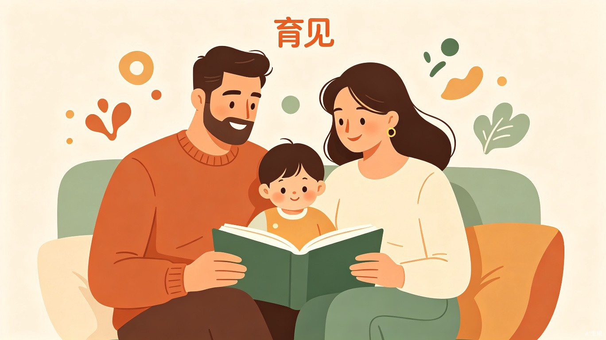

育见（英文名：ParentSight）是一款面向东亚家庭的 AI 科学育儿平台，聚焦儿童成长心理领域，以发展心理学、家庭系统理论为科学根基，帮助父母觉察并改善养育方式，打破代际创伤的传递循环。
平台不追求"完美育儿"的焦虑叙事，而是提供可理解、可实践、可追踪的科学养育支持，让每一位父母都能在与孩子的互动中看见自己、理解孩子、共同成长。
东亚家庭普遍存在一种特殊的养育困境：父母倾尽所有资源培养孩子，却在情感连接上屡屡碰壁。"为你好"的控制、"别人家的孩子"的比较、情感表达的匮乏——这些模式往往并非父母刻意为之，而是代际创伤的无意识传递。
主要用户画像包括：
"育见"选择社会服务赛道作为主攻方向。该赛道关注"公共服务、社会治理与线下场景，探索技术如何让社会运行更友好、生活更便捷"[1]。育儿教育本质上是一个社会性议题，关系到家庭和谐、青少年健康成长，具有明确的社会服务属性。
"育见"与"青少年身心健康"附加赛题高度吻合。该赛题方向明确提到"围绕习惯培养、心灵陪伴、心理疗愈等方向，开发工具、小游戏或内容产品，陪伴青少年健康成长"[1]。
| 维度 | 社会服务赛道要求 | "育见"的契合点 |
|---|---|---|
| 社会价值 | 让社会运行更友好、生活更便捷 | 改善家庭关系，间接促进青少年心理健康 |
| 公共服务 | 关注公共服务、社会治理 | 育儿知识普惠，降低科学育儿门槛 |
| 线下场景 | 探索线下场景应用 | 日常亲子互动场景的深度嵌入 |
| 公益属性 | 鼓励技术下沉公益场景 | 免费基础功能 + 公益心理援助引导 |
flowchart TB
A[育见平台] --> B[知识中心]
A --> C[AI 问答助手]
A --> D[觉察工具]
A --> E[情景练习]
A --> F[成长社区]
B --> B1[分阶段知识体系]
B --> B2[代际创伤专题]
B --> B3[每日科学推送]
C --> C1[智能问答]
C --> C2[紧急识别]
D --> D1[养育方式测评]
D --> D2[亲子关系评估]
D --> D3[成长记录日记]
E --> E1[冲突场景模拟]
E --> E2[回应方式分析]
F --> F1[匿名互助]
F --> F2[专家入驻]
按儿童发展心理学划分六大成长阶段，每个阶段提供基于权威理论的养育要点：
依恋关系的前奏，准父母心理调适
鲍尔比依恋理论，安全基地建立
埃里克森自主 vs 羞怯，边界建立
主动性培养，游戏与学习的平衡
学业压力应对，自尊与成就感
身份探索，独立与连接的博弈
每个阶段的内容设计遵循"为什么 + 怎么做 + 常见误区"的三段式结构，用通俗易懂的语言解释心理学原理，避免居高临下的说教口吻。
家长可描述具体育儿场景，AI 基于心理学知识库给出个性化建议。核心设计要点：
提供科学量表帮助父母觉察自己的养育模式，这是"育见"区别于普通育儿 App 的核心壁垒：
测评结果以可视化报告呈现，不贴标签、不打分排名，而是帮助家长理解"我的养育方式如何受自己原生家庭影响"，并提供针对性的改善路径。
设计常见冲突场景，让家长选择回应方式，AI 分析每种回应对孩子心理发展的影响：
| 场景类型 | 示例场景 | 练习目标 |
|---|---|---|
| 学业冲突 | 孩子考试失利，情绪低落 | 区分"支持"与"施压"的边界 |
| 青春期叛逆 | 孩子锁门拒绝沟通 | 理解独立需求 vs 安全担忧 |
| 二胎争宠 | 大宝说"你们只爱弟弟" | 公平 vs 公平感的差异 |
| 情绪失控 | 忍不住对孩子大吼之后 | 修复关系，而非完美控制 |
根据孩子年龄自动推送对应阶段的育儿知识卡片，内容短小精悍（3分钟可读完），结合真实案例故事增强代入感。推送内容涵盖：
家长可匿名分享育儿困惑，获得其他家长和 AI 的建议。社区设计强调：
家长可记录与孩子的互动场景和自己的情绪反应，AI 定期分析记录，帮助家长发现行为模式。提供：
首批用户通过社区合作 + 内容引流双路径获取，核心思路是找到与目标用户天然接触的场景。
为社区居委会、幼儿园免费提供"家长心理讲座"或"家园共育工具"，换取向家长推广的渠道。社区有家庭文明建设的考核指标，幼儿园有家园共育的需求，双方都能获益。
与妇联、共青团、青少年心理健康服务中心等政府公益组织合作，将平台作为其家庭服务体系的线上延伸。这类组织有服务覆盖面的考核需求，平台能帮助他们触达更多家庭。
在小红书、抖音发布"东亚家庭养育盲区"系列短内容（如"为什么你总忍不住拿孩子和别人比"），吸引有觉察意识的家长主动搜索平台。
与关注青少年心理健康的公益组织合作，通过他们的服务网络触达有需要的家庭，同时强化产品的公益属性。
匿名社区中的真实故事天然具有传播力。当一位家长分享"我终于理解了为什么自己总是对孩子发火"的经历，会引发同类型家长的共鸣和自发传播。
心理学内容的专业性和准确性是平台的生命线。内容供应链分三层建设：
在 Demo 阶段，重点展示基础层内容 + 理论来源标注，让评委看到内容的科学可追溯性。
育儿咨询属于"低频刚需"——家长遇到问题时才会主动搜索。要打破这一局限，需要设计持续触发的使用场景：
AI 给出育儿建议存在潜在风险，需要从产品设计层面建立分级响应机制，而非仅依赖免责声明：
| 问题级别 | 判定标准 | 平台响应 |
|---|---|---|
| 日常养育 | 作息、饮食、学习习惯、情绪引导等常规问题 | AI 基于心理学知识库直接回答，附带理论依据 |
| 行为困扰 | 持续焦虑、注意力问题、社交困难等 | AI 提供初步分析和应对建议，同时提示"如持续存在建议咨询专业机构" |
| 心理风险 | 涉及自伤、抑郁、虐待等关键词信号 | AI 不做判断，立即展示专业心理援助热线（如全国24小时心理危机干预热线 400-161-9995）和就近机构查询入口 |
用一句话界定"育见"的不可替代性：
这个定位背后有三个支撑点：
| 维度 | 传统育儿 App | 短视频/公众号 | 育见 |
|---|---|---|---|
| 内容深度 | 碎片化，缺乏体系 | 算法驱动，标题党多 | 基于发展心理学系统构建 |
| 文化适配 | 西方理论直接翻译 | 经验分享，缺乏科学验证 | 专为东亚家庭文化定制 |
| 互动方式 | 单向信息推送 | 被动消费 | AI 对话 + 情景模拟 + 社区互助 |
| 自我觉察 | 几乎无 | 几乎无 | 核心功能，代际创伤专题 |
| 心理安全 | 贩卖焦虑促付费 | 流量至上 | 拒绝焦虑叙事，强调成长型思维 |
"代际创伤"专题模块是"育见"最核心的差异化设计。东亚家庭特有的代际传递问题——情感忽视、控制型养育、重男轻女、比较型沟通——在现有育儿产品中几乎无人触及。
这一模块帮助父母理解："我的养育方式如何受自己原生家庭影响？"并提供打破不良循环的具体路径。这不仅是功能差异，更是价值主张的差异——我们不告诉父母"你应该怎么做"，而是帮助他们"理解自己为什么这样做"。
初赛阶段建议做出一个可交互的 HTML 页面，包含以下核心体验：
深度测评报告、个性化成长计划、专家一对一咨询预约
企业母婴福利、员工家庭关怀计划、教育机构合作
专家课程、专题训练营、读书会
匿名化育儿趋势报告，供学术研究和政策制定参考
育见——寓意"在养育中看见"，看见孩子、看见自己、看见成长的可能。
| 阶段 | 时间 | 交付物 | 关键任务 |
|---|---|---|---|
| 报名 | 6.16 - 7.15 | 创意提案 + 报名帖 | 完善创意文档，提交报名 |
| 初赛 | 6.16 - 7.15 | 可体验 Demo | 核心功能页面开发，AI 问答演示 |
| 复赛 | 7.21 - 8.09 | 完整产品 | 全部功能实现，用户体验优化 |
| 决赛 | 8.21 - 8.22 | 路演展示 | 准备路演材料，现场答辩 |
本文档为 TRAE AI 创造力大赛参赛创意文档，基于发展心理学理论与东亚家庭文化洞察撰写。